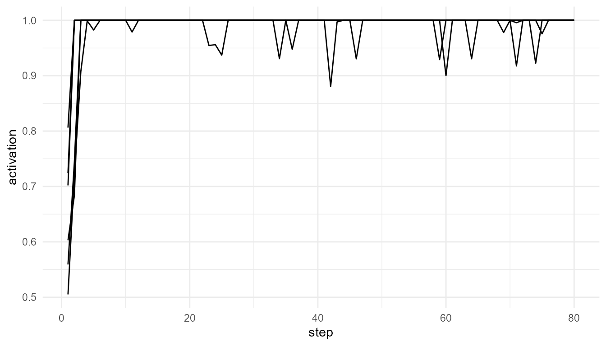

Purpose
This article introduces the conceptual foundation of
consciousnessModelR. The package is not designed to solve
the problem of consciousness, nor does it attempt to measure or create
consciousness. Instead, it provides simplified computational models that
help learners examine how different theories describe attention, access,
integration, broadcast, and threshold-like transitions.
The guiding question is not whether these simulations are conscious. They are not. The guiding question is:
What kinds of mechanisms do different theories emphasize when they attempt to explain conscious access, awareness-like processing, or the organization of conscious cognition?
This distinction is important. A computational model can represent selected structural or functional features of a theory without reproducing the phenomenon that the theory ultimately aims to explain.
Consciousness as a multi-dimensional concept
The term consciousness does not refer to a single, simple property. In philosophy, psychology, neuroscience, and cognitive science, it is used in several related but distinct ways. It may refer to subjective experience, wakefulness, reportability, perceptual awareness, self-awareness, attention, or the availability of information for reasoning and action.
One influential distinction is between phenomenal consciousness and access consciousness (Block 1995). Phenomenal consciousness refers to the qualitative, first-person character of experience: what it is like to see red, feel pain, hear music, or experience a thought. Access consciousness refers to the availability of information for reasoning, memory, decision-making, verbal report, or behavioral control.
This distinction helps clarify the scope of the package. The
functions in consciousnessModelR are primarily concerned
with access-oriented and process-oriented concepts. They model
competition, priority, integration, broadcast, and threshold crossing.
They do not model subjective feeling, first-person experience, or the
qualitative character of consciousness.
The hard problem and the modeling problem
A major challenge in consciousness studies is the distinction between explaining cognitive functions and explaining subjective experience. Chalmers famously described this as the difference between the “easy problems” and the “hard problem” of consciousness (Chalmers 1996). The so-called easy problems are not easy in a practical scientific sense, but they concern functions that can be studied through behavior, cognition, and neural mechanisms: attention, report, discrimination, memory, integration, and control.
The hard problem asks why and how physical or computational processes are accompanied by subjective experience at all. A model may explain how information is selected, integrated, or broadcast, but that does not automatically explain why such processing should feel like anything from the inside.
consciousnessModelR therefore focuses on the modeling
problem rather than claiming to solve the hard problem. It asks how
theoretical ideas can be represented in simplified computational form.
This makes the package useful for education, comparison, and conceptual
analysis, while preserving the distinction between functional simulation
and subjective consciousness.
Consciousness, attention, and access
Attention and consciousness are closely related, but they are not identical. Attention can be understood as a process that prioritizes certain signals for further processing. Conscious access, by contrast, often refers to information becoming available to broader cognitive systems such as working memory, report, planning, or action.
Some theories treat attention as an important gateway to consciousness. Others argue that attention and consciousness can dissociate. For example, a stimulus may influence behavior without being consciously reported, or a conscious experience may occur without focused attention. This makes attention a useful but incomplete entry point into the study of consciousness.
In consciousnessModelR, this distinction is reflected in
the separation between:
-
attention_competition_model(), which models priority-based selection; -
simulate_global_workspace(), which models competition and possible global access; -
broadcast_network(), which models the spread of selected information through a system; -
consciousness_threshold(), which applies a simplified access threshold.
The separation of these functions is intentional. It allows learners to examine attention, access, broadcast, and threshold crossing as related but distinct processes.
Major theoretical approaches represented in the package
The package is organized around several broad theoretical ideas.
Global Workspace Theory proposes that conscious access involves information becoming globally available to multiple specialized systems (Baars 1988; Dehaene 2014). In this view, many processes operate locally and unconsciously, but a selected signal may become widely available through a global workspace.
Attention and competition models emphasize the selection of information from among competing signals. Selection may depend on salience, novelty, task relevance, or noise. These models help explain why some information receives priority while other information remains in the background.
Broadcast models emphasize the distribution of selected information across a network. Information that remains local may have limited influence, while broadcast information can affect memory, decision-making, report, and action.
Information integration approaches emphasize the organization of the system itself. Integrated Information Theory, for example, argues that consciousness is related to the degree to which a system is both integrated and differentiated (Tononi 2004; Oizumi, Albantakis, and Tononi 2014). The package does not compute formal phi, but it provides a simplified educational proxy for thinking about integration and differentiation.
Threshold models represent conscious access as a transition. Below a threshold, information may remain weak, local, or unavailable for report. Above a threshold, information may become stable, accessible, or globally available. This is a simplified way to explore how continuous activation can be treated as producing discrete access-like events.
Package functions in conceptual context
| Function | Conceptual role | Theoretical emphasis |
|---|---|---|
simulate_global_workspace() |
Models competition among processes and possible global access | Global Workspace Theory |
attention_competition_model() |
Models how signals compete for priority | Attention and selection |
broadcast_network() |
Models the spread of selected information across a network | Broadcast and access |
simulate_information_integration() |
Models a simplified relationship between connectivity, shared activity, and differentiation | Information integration |
consciousness_threshold() |
Models threshold crossing as an educational proxy for awareness-like access | Threshold models |
plot_consciousness_sim() |
Visualizes simulation outputs | Interpretation and teaching |
This structure allows the package to represent consciousness theories as modular educational models. Rather than treating consciousness as a single number, the package separates it into interacting conceptual dimensions.
A minimal example
The following example simulates a simplified global workspace. Several processes compete for activation. If one process becomes sufficiently strong, it may cross an ignition threshold and be treated as globally available.
sim <- simulate_global_workspace(
n_processes = 6,
steps = 80,
ignition_threshold = 0.75,
seed = 1
)
head(sim)
#> step process activation winner is_winner broadcast ignited
#> 1 1 P1 0.5591961 P6 FALSE 0.0000000 TRUE
#> 2 1 P2 0.6028345 P6 FALSE 0.0000000 TRUE
#> 3 1 P3 0.7019484 P6 FALSE 0.0000000 TRUE
#> 4 1 P4 0.7242716 P6 FALSE 0.0000000 TRUE
#> 5 1 P5 0.5051432 P6 FALSE 0.0000000 TRUE
#> 6 1 P6 0.8062672 P6 TRUE 0.8062672 TRUE
plot_consciousness_sim(
sim,
x = "step",
y = "activation",
group = "process"
)
Interpretation
The plot shows several processes fluctuating in activation. In a global-workspace interpretation, local activation is not enough for conscious access. A process must become strong enough to dominate competition and cross a threshold for global availability.
This example illustrates a functional transition from local processing to access-like broadcast. However, it should not be interpreted as a model of subjective experience. The simulation represents a theoretical mechanism, not consciousness itself.
Why simplified models are useful
Simplified models are valuable because they make theoretical assumptions visible. A verbal theory may describe attention, integration, broadcast, or threshold crossing in general terms. A simulation requires these ideas to be expressed as variables, rules, and outputs.
This forces several useful questions:
- What is being treated as the key mechanism?
- What is the model assuming?
- What is excluded?
- What changes when a parameter changes?
- Does the model represent access, experience, report, or only activation?
For teaching, these questions are often more important than the numerical output itself. The model becomes a tool for conceptual clarification.
Limits of the package
The package should be interpreted carefully. It does not:
- measure consciousness;
- detect awareness;
- simulate subjective experience;
- determine whether biological or artificial systems are conscious;
- implement full neuroscientific models;
- solve the hard problem of consciousness.
Instead, it provides educational simulations that represent selected ideas from consciousness theory. Its value lies in helping learners compare theoretical structures and understand how abstract ideas can be translated into computational form.
Key takeaway
Consciousness is not a single variable that can be directly simulated
in a simple package. It is a multi-dimensional concept involving
experience, access, attention, integration, reportability, and
self-relation. consciousnessModelR focuses on the
functional and theoretical dimensions that can be represented through
simplified models.
The purpose of the package is therefore not to explain consciousness completely, but to support careful thinking about how different theories frame the problem.